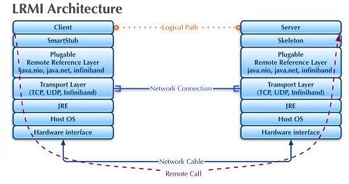
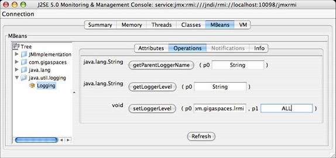
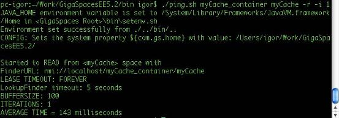
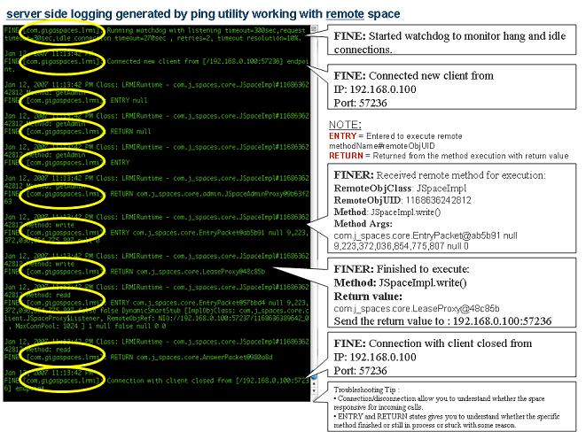

Section Summary: Setting communication protocol using exporters; GenericExporter configuration - ports, connections, and threads.
Overview
GigaSpaces provides a pluggable communication adaptor, LRMI (Light Remote Method Invocation), built on top of NIO communication protocol.

The LRMI uses a GenericExporter that implements the net.jini.export.Exporter interface.
All GigaSpaces components that represent remote objects/services (for example:Distributed Transaction Manager, Lookup Service, GSA, GSM, GSC, Space) use the LRMI protocol.
The GigaSpaces LRMI protocol has been designed to allow multiple services running within the same JVM to share their communication resources and to allow non-blocking IO communication with minimal serialization overhead. For example, it allows different space instances hosted within the same GSC to share the same LRMI resources without exhausting the JVM and machine resources. The LRMI comes with default settings that may not be optimized for every scenario. You may need to change the defaults for the client or server side to have the maximum throughput and lowest latency your network and hardware may provide.

The GigaSpaces LRMI using two independent resource pools working collaboratively allowing a client to communicate with a server in a scalable manner: A client connection pool configured via the com.gs.transport_protocol.lrmi.max-conn-pool at the server side and a server Connection thread pool configured via the com.gs.transport_protocol.lrmi.max-threads also at the server side. You may configure these two pools' sizes and their resource timeouts to provide maximum throughput and low latency when a client communicates with a server. The default LRMI behavior will open a different connection at the client side and start a connection thread at the server side, once a multithreaded client accesses a server component. All client connections may be shared between all the client threads when communicating with the server. All server side connection threads may be shared between all client connections.
Client LRMI Connection Pool
The client LRMI connection pool maintained per server component - i.e. by each space partition. For each space partition a client maintains a dedicated connection pool shared between all client threads accessing a specific partition. When having multiple partitions (N) hosted within the same GSC, a client may open maximum of N * com.gs.transport_protocol.lrmi.max-conn-pool connections against the GSC JVM process.
You may need to change the com.gs.transport_protocol.lrmi.max-conn-pool value (1024) to have a smaller number. The default might be high for application with multiple partitions.
Client total # of open connections = com.gs.transport_protocol.lrmi.max-conn-pool * # of partitions This may result very large amount of connections started at the client side resulting "Too many open files" error. You should increase the OS' max file descriptors amount by calling the following before running the client application (on UNIX): ulimit -n 32000 or by lowering the com.gs.transport_protocol.lrmi.max-conn-pool value. |
Server LRMI Connection Thread Pool
The LRMI connection thread pool is a server side component. It is in charge of executing the incoming LRMI invocations. It is a single thread pool within the JVM that executes all the invocations, from all the clients and all the replication targets.
Selector Threads
To increase the concurrency and scalability of the LRMI behavior, multiple NIO channel selectors are used for write and read network traffic activities configured via the com.gs.transport_protocol.lrmi.selector.threads property. The same property used to configure both the write and read selector thread pool size.
Machines with Multi-Core CPUs can leverage this functionality in an optimal manner. A dedicated thread pool exists for socket write operations and another thread pool for socket read operations. The read selector threads (4 by default) listening for incoming client invocations. They receive the incoming traffic from the network, read the raw data bytes and transfer these to be processed by the LRMI connection thread pool. The write selector threads used when there is a need to send data back into the client side with asynchronous operations (blocking read/ blocking write/notifications).
Min Latency and Max Throughput
Both of the resource pools elements might have different lifespan. Usually, once a connection is established between a client and a server, it will be open as long as the client is still running. The connection will be terminated once a client will be terminated or when the client will not perform any network activity for some time and the connection will be identified as idle. See the watchdog description below how this behavior should be configured. The same goes for LRMI connection thread, it will be available as long as there are clients accessing the server. A connection thread will return into the pool and the pool will shrink itself once there would not be any remote activity for some time. This timeout is configured via the com.gs.transport_protocol.lrmi.threadpool.idle_timeout. LRMI threads and connection are used also for server to server communication such as data replication.
The size of the LRMI connection pool and LRMI thread pool will impact the latency response time for a remote request. Once any of these pools is fully exhausted a client request will be suspended until a free connection or thread will be available.
The number of connections a client should open also depends on the size of the objects being sent across the wire. For a multi-threaded client writing or reading large objects, you may have the same amount of connections established for each client thread. This will ensure minimal latency request duration with maximum throughput.
Watchdog
When reading from a NIO SocketChannel and the connection between the client and server fails abnormally, no notification is generated. The most common example for such failure is disconnecting the network cable while performing the read operation. In this case the read operation is blocked for a long time, without ever knowing that the connection is closed. This can cause several problems such as exceeding the number of open sockets on the server or causing client read requests to hang.
Known solutions and problems they may have:
- TCP keep alive mechanism – TCP has an option sending keep alive packets in order to detect such failures, but the keep alive interval can not be set for less than 2 hours, which is not very useful.
- Read timeout – the old Java IO package allowed to execute read operations with user defined timeout. This does not work with NIO. You can still set the timeout on channel.socket(), but this only applies to reading from socket InputStream and not channel reads.
The watchdog network failure detection mechanism applies to the space proxy (client side) when interacting with a remote space and with space-space interaction (replication). The watchdog is efficient both in terms of memory and CPU consumption with minimal overhead.
The network failure detection mechanism is timeout-based – each read operation has a predefined timeout. There are two timeout modes: Idle connection timeout and request timeout:
- Idle connection timeout – occurs when a thread listens on a server socket for longer than the defined timeout. This happens when a space listens for client requests, or a client waits for server notifications. Configured via the com.gs.transport_protocol.lrmi.idle_connection_timeout system property.
- Listening timeout handling – timeout is perceived as a broken link and the server closes existing connection to the client. When the link between the server and the client is restored – connection is reestablished.
- Heartbeat mechanism – used to avoid closing valid connections.
- Request timeout – occurs when the client sends a request to the space and doesn't get a reply for the defined timeout. Configured via the com.gs.transport_protocol.lrmi.request_timeout system property.
- Request timeout handling – when timeout expires, the connection is first tested by establishing a new dummy connection to the server using the same port. If the connection is established successfully, timeout is ignored and connection timeout is reset. Otherwise, the connection is closed. The dummy request timeout controlled via the com.gs.transport_protocol.lrmi.inspect_timeout system property.
Failure detection uses a watchdog design pattern to monitor timeouts of NIO operations. Watchdog is a singleton thread that runs every predefined period of time, according to timeout resolution, checks all the threads that are currently registered and fires timeout event on the threads that exceeded their allowed timeout.
A value for the com.gs.transport_protocol.lrmi.idle_connection_timeout and the com.gs.transport_protocol.lrmi.request_timeout properties should be determined based on the amount of total clients a system may have and the number of the concurrent activities these clients may have. Small values (100 and 30, respectively) are recommended for systems with very large amounts of clients with high concurrency. High values (900 and 300, respectively) are recommended for system with very small amount of clients with high concurrency.
bind-port
Once a client communicates with a server component it initially uses a bootstrap port specified as part of the server proxy stored with the lookup service. Once a client opens a connection with a server component a random port is opened at the server side and used to serve the client (private port). You may specify range of ports to be used by the server component to restrict the server from using arbitrary random ports that are not available due to a firewall or some other network restriction. The com.gs.transport_protocol.lrmi.bind-port allows you to configure the available ports to use.
maxBufferSize
An LRMI connection maintains a buffer that is used when sending TCP packets. This buffer size determines the amount of TCP packets that will be sent to deliver a request. When having requests with large amount of data, you may need to increase the com.gs.transport_protocol.lrmi.maxBufferSize to reduce the amount of packets sent.
Client as a Server
A server component may open a connection back to the client in the following cases:
- When a request includes a class that cannot be found on the server classpath, the GigaSpaces dynamic class loading component requests the missing class to be sent to the server
- When a client registers for notifications
- When a client performs blocking read/take operation (timeout > 0)
- When a change has been done with the service topology (service terminated or added), the lookup service notifies the client (client lookup cache)
To allow the above , the client must set the java.rmi.server.hostname property with the relevant IP. For a Multi-Homed machines this is critical setting, since without having this set, the server side might use the wrong IP Address to communicate back with the client.
LRMI Configuration
The LRMI configuration options set as system proprties. They are listed below:
| System Property | Description | Default value | Server/Client Setting | Unit |
|---|---|---|---|---|
| com.gs.transport_protocol.lrmi.max-conn-pool | The maximum amount of connections to the space server remote services that can work simultaneously in a client connection pool. Starts with 1 connection. Defined per each remote service (by default, each remote service has 1024 maximum connections). | 1024 | Server | Connection |
| com.gs.transport_protocol.lrmi.min-threads | GigaSpaces maintains a thread pool in the client and server side, that manages incoming remote requests. The thread pool size is increased each time with one additional thread and shrinks when existing threads are not used for 5 minutes. This parameter specifies the minimum size of this thread pool. | 1 | Server | Threads |
| com.gs.transport_protocol.lrmi.max-threads | This parameter specifies the maximum size of the thread pool. |
128 | Server | Threads |
| com.gs.transport_protocol.lrmi.bind-port | Server port used for incoming client requests, or notifications from server to client. The server port is set by default to 0, which means next free port. This means that whenever GigaSpaces is launched, it allocates one of the available ports. Define a specific port value to enforce a specific port on the space server or client side. You can define a range of ports, see below. | 0 | Server | |
| java.rmi.server.hostname | Binds the GigaSpaces Server on a specified network interface. See details below). If java.rmi.server.hostname is null the system sets the localhost IP address. | hostname | Client & Server | |
| com.gs.transport_protocol.lrmi.idle_connection_timeout | Watchdog idle connection timeout. | 900 sec | Client | Seconds |
| com.gs.transport_protocol.lrmi.request_timeout | Watchdog request timeout. | 30 sec | Client | Seconds |
| com.gs.transport_protocol.lrmi.inspect_timeout | Watchdog dummy packet connection timeout used when the watchdog suspects a request connection is blocked (com.gs.transport_protocol.lrmi.request_timeout elapsed). | 1000 millisec | Client | millisec |
| com.gs.transport_protocol.lrmi.threadpool.idle_timeout | LRMI thread pool idle timeout. Usually should be tuned for server side | 300000 milisec | Server | millisec |
| com.gs.transport_protocol.lrmi.connect_timeout | LRMI timeout to establish a socket connection | 5000 | Server | millisec |
| com.gs.transport_protocol.lrmi.maxBufferSize | The NIO internal cache (a DirectByteBuffer) might cause an OutOfMemoryError due-to direct memory exhaustion. To avoid such a scenario, the LRMI layer breaks the outgoing buffer into a several chunks. By doing so, the NIO internal cache is kept small, and may not cause any error. The size of these chunks can be determined by this property |
65536 (64k) | Client & Server | Bytes |
| com.gs.transport_protocol.lrmi.selector.threads | LRMI selector threads. This should be configured with multi core machines. Usualy should be tuned for server side | 4 | Client & Server | Threads |
| com.gs.transport_protocol.lrmi.classloading | Enables LRMI dynamic class loading. | true | Server | boolean value |
| com.gs.transport_protocol.lrmi.classloading.import | Enables importing of classes using LRMI dynamic class loading. | true | Server | boolean value |
| com.gs.transport_protocol.lrmi.classloading.export | Enables exporting of classes using lrmi dynamic class loading. | true | Server | boolean value |
| com.gs.transport_protocol.lrmi.tcp-send-buffer-size | Set the TCP Send Buffer size (SO_SNDBUF). | OS default | Client & Server | bytes |
| com.gs.transport_protocol.lrmi.tcp-receive-buffer-size | Set the TCP receive Buffer size (SO_RCVBUF). | OS default | Client & Server | bytes |
| com.gs.transport_protocol.lrmi.tcp-keep-alive | Set the TCP keep alive mode (SO_KEEPALIVE). | true | Client & Server | Seconds |
| com.gs.transport_protocol.lrmi.timeout_resolution | Resolution in percents. Timeout resolution indicates the accuracy of the request timeout. | 10 | Client | Percent |
 If you are using the notification slow consumer mechanism see the Slow Consumer for additional LRMI parameters to configure.
If you are using the notification slow consumer mechanism see the Slow Consumer for additional LRMI parameters to configure.
Defining Socket Port Range per JVM
You can define port range using the com.gigaspaces.transport.bind-port property, meaning that every JVM acquires a bind port from a defined port range. This functionality is useful when having multiple JVMs on the same machine (clients or servers), and simplifies firewall setup.
Here is how you can set a listening port rage for GSA/GSC/GSM:
export EXT_JAVA_OPTIONS=-Dcom.gs.transport_protocol.lrmi.bind-port=7000-7100
Configuration with Multi-Homed Machines
When working with a multi-homed machine (a computer with multiple network cards), use the following system property to bind the GigaSpaces Server on a specified network interface:
-Djava.rmi.server.hostname=<hostname or IP address>
The value of this property represents the host name string that must be associated with the network interface. The default value of this property is the IP address of the local host, in "dotted-quad" format.
Troubleshooting
You can troubleshoot the space activity using LRMI logging. You can turn on LRMI logging in the following ways:
Offline mode – via gs_logging.properties
- Open <GigaSpaces Root>/config/gs_logging.properties
- Locate the following line:
com.gigaspaces.lrmi.level = INFO
- Set debug logger granularity level:
- ALL – all debug messages available for LRMI.
- FINE – configuration, watchdog, client connections (connect/disconnect).
- FINER – content and execution state of remote method invocation on remote object.
- SEVER – caught exceptions by LRMI on server and client side.
- Save and close the gs_logging.properties file.
- Start a space by deploying a data-grid PU or a custom PU with a space. You may also start a space via <GigaSpaces Root>/bin/gsInstance.
LRMI communication transport protocol debug messages are displayed.
During Runtime – using JMX
- Start gsInstance using the following Java system properties:
-Dcom.sun.management.jmxremote.port=5001 -Dcom.sun.management.jmxremote.ssl=false -Dcom.sun.management.jmxremote.authenticate=false
- Start jconsole – copy the JMX URL to the JConsole.
- Click Connect.

- Set com.gigaspaces.lrmi with a desired log level.
- Click setLoggerLevel.
- A new log level is defined.

When LRMI logging is turned on, the space displays the following when started:

To test LRMI logging, you can run the space ping utility using the following command:
/bin/gs.bat/space ping mySpace_container mySpace -r -i 1

The space displays the following:

The client displays the following:

JVM Known Issue
 In some cases you may encounter the following exception:
In some cases you may encounter the following exception:
CONFIG [com.gigaspaces.grid.gsc]: initialServiceLoadDelay=5000 Exception in thread "LRMI Connection--pool-1-thread-1" java.lang.NullPointerException at sun.nio.ch.PollSelectorImpl.wakeup(PollSelectorImpl.java:84) at com.gigaspaces.lrmi.nio.SelectorThread.registerKey(SelectorThread.java:250) at com.gigaspaces.lrmi.nio.ChannelEntry.workerFinishedReading(ChannelEntry.java:131) at com.gigaspaces.lrmi.nio.Pivot$Worker.dispatch(Pivot.java:111) at com.j_spaces.kernel.WorkingGroup$TaskWrapper.run(WorkingGroup.java:62) at java.util.concurrent.ThreadPoolExecutor$Worker.runTask(ThreadPoolExecutor.java:650) at java.util.concurrent.ThreadPoolExecutor$Worker.run(ThreadPoolExecutor.java:675) at java.lang.Thread.run(Thread.java:595)
This is a JVM bug resolved with JDJ 1.6u18. For more details, see http://bugs.sun.com.
 If your client application loses its connection to the server, you can follow a simple procedure to check if the server erased any of your notify templates in the interim. For each notify template, write an Entry to the space that matches the template and see if you receive a notification. If you do not receive a notification, this means that while you were disconnected, new Entries matching the notify template entered the space (you can try to find them – depending on their lease time, they may still exist). As a result, your notify template was erased.
If your client application loses its connection to the server, you can follow a simple procedure to check if the server erased any of your notify templates in the interim. For each notify template, write an Entry to the space that matches the template and see if you receive a notification. If you do not receive a notification, this means that while you were disconnected, new Entries matching the notify template entered the space (you can try to find them – depending on their lease time, they may still exist). As a result, your notify template was erased.
The GenericExporter
GigaSpaces provides the GenericExporter as its default exporter, which works with LRMI. However, it is possible to use GigaSpaces with other exporters instead:
- net.jini.jrmp.JrmpExporter - based on RMI protocol
- net.jini.jeri.BasicJeriExporter - based on Jini protocol
- Your own implementation, as long as it is part of the application classpath
Changing the default exporter is done by editing the <GigaSpaces Root>\config\services\services.config file.
For example, to change the default exporter from GenericExporter to JrmpExporter:
Change:
{
...
// uncomment the following next line to use Jrmp exporter instead of GenericExporter
// defaultExporter = new net.jini.jrmp.JrmpExporter();
defaultExporter = new com.gigaspaces.lrmi.GenericExporter( nioConfig );
}
to:
{
...
// uncomment the following next line to use Jrmp exporter instead of GenericExporter
defaultExporter = new net.jini.jrmp.JrmpExporter();
}